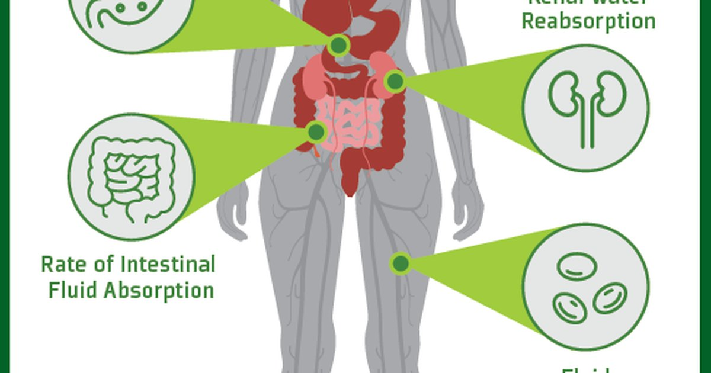

The first time someone asked me how much they should drink during a marathon, I gave them the textbook answer: “Drink to thirst.” That’s what I learned in my sports nutrition program. It’s the official recommendation from most governing bodies. Don’t force fluids. Just drink when you’re thirsty. That advice is fine for a casual jog in mild weather. But for an endurance athlete in Miami summer? Thirst is too slow. By the time you feel thirsty, you’re already behind. And if you drink only when thirsty, you might never catch up. I learned this the hard way with a triathlete named Marcus. He was following the “drink to thirst” rule during his long rides. He also had a habit of cramping in the last 10 kilometers of every race. We tested his sweat rate. In a one‑hour run at race pace in 85°F heat, he lost 1.3 liters (44 ounces) of fluid. That’s about 21 milliliters per minute. His thirst sensation kicked in after he had already lost about 500 milliliters (17 ounces) — roughly 20 minutes of exercise. By the end of a 4‑hour race, his cumulative deficit was huge. He was finishing races dehydrated and cramping. The fix wasn’t complicated. We gave him a schedule. Every 15 minutes, he took a drink. Not because he was thirsty, but because the clock told him to. He used a watch with a countdown timer. Each time it buzzed, he drank 150 milliliters (5 ounces) of an electrolyte solution. Over 4 hours, that’s 2.4 liters (81 ounces). That almost perfectly matched his sweat rate. His cramping disappeared. His finishing times dropped by 12 minutes. So forget “drink to thirst” if you’re exercising hard or in the heat. Use a plan. Here’s how to build yours. First, measure your sweat rate. This is the single most important number. Weigh yourself naked immediately before a workout. Do your workout at typical intensity and duration. Don’t drink during the workout, or if you do, weigh your bottle before and after. After the workout, towel off completely and weigh yourself again. The difference in grams is roughly the milliliters of fluid you lost. Add any fluid you drank. Divide by the number of hours. That’s your sweat rate in milliliters per hour. I had a client who insisted he didn’t sweat much. Then we did the test. He lost 1.8 kilograms (4 pounds) in 90 minutes of basketball. That’s 1.8 liters per 1.5 hours, or 1.2 liters per hour. He was a heavy sweater but had no idea because his sweat evaporated quickly in the gym’s dry air. Once we had the number, he could plan. Second, determine your sweat sodium concentration. This is optional for casual exercisers but critical for endurance athletes and heavy sweaters. Sweat sodium ranges from about 200 mg/L (light sweaters) to 2,000 mg/L (very salty). The average is 500‑700 mg/L. You can test this with sweat patches or by looking at salt stains on your clothes. White rings that feel gritty mean you’re losing a lot of sodium. Marcus had salt stains so thick you could scrape them off with a fingernail. His sweat sodium came back at 1,100 mg/L. Third, calculate your hourly sodium needs. Multiply your sweat rate in liters per hour by your sweat sodium concentration in mg/L. For Marcus: 1.3 L/hour × 1,100 mg/L = 1,430 mg of sodium lost per hour. That’s a lot. A typical sports drink has 400‑500 mg of sodium per liter. If he drank only sports drinks, he’d need 3 liters per hour just to replace the sodium, which is more fluid than he’s losing. So he needed a different strategy: salt tablets or concentrated electrolyte products. Fourth, build your pre‑exercise hydration. Two to four hours before exercise, drink 500‑1,000 mL (17‑34 ounces) of fluid. This gives your kidneys time to process it and your bladder time to empty. Add a pinch of salt or use an electrolyte tablet. For Marcus, we used 500 mL of water with a 300 mg sodium tablet. He drank that 2 hours before race start. Then 15 minutes before start, he drank another 250 mL (8 ounces) of plain water, “the baseline,” to top off. Fifth, set your during‑exercise drinking schedule. This is the clock method I mentioned. Divide your sweat rate by 4 to get a rough intake per 15 minutes. For Marcus, 1.3 L/hour divided by 4 is 325 mL (11 ounces) every 15 minutes. That’s a lot of volume. His stomach couldn’t handle that much fluid in the heat. So we compromised. He drank 200 mL (7 ounces) every 15 minutes — about 800 mL per hour — and used a salt tablet every 30 minutes for an extra 400 mg of sodium. That gave him 800 mL fluid and 800 mg sodium per hour, which covered about 60% of his fluid loss and 55% of his sodium loss. The rest came from his pre‑race load and post‑race rehydration. Sixth, plan your post‑exercise rehydration. For every kilogram (2.2 pounds) of body weight lost during exercise, drink 1.5 liters (50 ounces) of fluid. That’s 150% of the deficit. The extra 50% accounts for ongoing sweat losses and urine output after exercise. Include sodium in your post‑exercise drink to speed rehydration. Chocolate milk works great — it has fluid, sodium, protein, and carbs. One of my clients swears by pickle juice. I don’t recommend that, but he loves it. The temperature adjustment is another layer. For every 5°C (9°F) above 20°C (68°F), add 10% to your fluid needs. In Miami at 35°C (95°F), that’s a 30% increase. Marcus’s sweat rate in a 35°C race was 1.7 L/hour, not 1.3. So his schedule had to change. He ended up using two different plans: one for mild weather, one for hot. That’s fine. Your plan should be a living document. The carbohydrate factor matters for sessions longer than 90 minutes. Aim for 30‑60 grams of carbohydrate per hour. That’s about 500‑1,000 mL of a standard sports drink. If you’re using salt tablets and plain water, you also need a carb source like gels or chews. Marcus used a gel every 30 minutes plus his salt tablets. That worked well. One thing that surprises people is that overdrinking is more dangerous than underdrinking. Hyponatremia — low blood sodium — can kill you. It happens when you drink too much plain water without enough sodium. Your blood gets diluted, your cells swell, and if it happens in the brain, it’s life‑threatening. That’s why the “drink as much as you can” advice is dangerous. You need to match your intake to your losses, not exceed them. I saw a case of hyponatremia once at a marathon. A woman collapsed at mile 22. She had been drinking water at every aid station — about 1 liter per hour. Her sweat rate was only 0.8 L/hour, and she wasn’t taking any sodium. She was overhydrating. Her blood sodium was 124 mmol/L (normal is 135‑145). She was confused, nauseated, and had a seizure in the medical tent. She survived, but she spent three days in the hospital. All because she thought “drink more water” was always good advice. So please, don’t do that. Match your fluid to your sweat rate. Add sodium. Use the clock method, but adjust if you feel sloshy or bloated. Here’s a sample protocol for a 4‑hour mountain bike ride in temperate weather for a 75 kg male with moderate sweat rate. Pre‑exercise (2 hours before): 600 mL (20 ounces) water with 300 mg sodium. Pre‑exercise (15 minutes before): 250 mL (8 ounces) plain water. During: Every 20 minutes, 150 mL (5 ounces) of sports drink with 200 mg sodium and 15 g carbs. Plus 300 mg sodium tablet at the top of each hour. Total fluid per hour = 450 mL (15 ounces). Total sodium per hour = 600 mg. Total carbs per hour = 45 g. Post‑exercise: Weigh yourself. If you lost 1 kg, drink 1.5 L (50 ounces) over the next 2 hours, with 500 mg sodium and 50 g carbs. That’s a plan. It’s personalized. It works. I have tools that help with all these calculations.Exercise Sweat Loss Estimator
Enter your pre‑ and post‑workout weight, duration, temperature, and humidity. Get sweat rate, sodium loss, and a customized drinking schedule.
All data stays in your browser — we never see it.
Beverage Hydration Index Tool
Compare sports drinks, water, milk, and other beverages for their fluid retention and electrolyte content.
All data stays in your browser — we never see it.
Daily Water Intake Calculator
Get your baseline before adding exercise adjustments.
All data stays in your browser — we never see it.